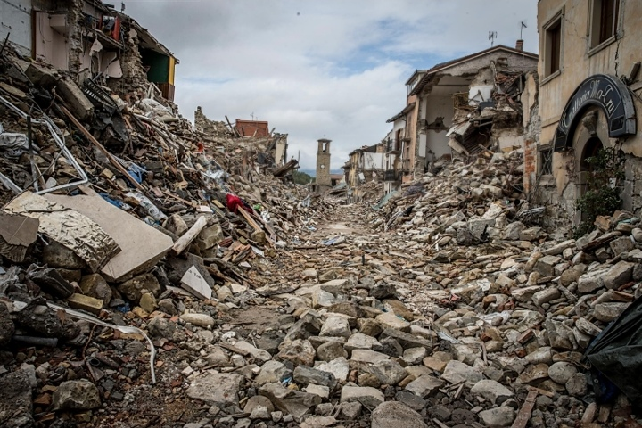

EARTHQUAKE

An earthquake (also known as a quake, tremor or temblor) is the shaking of the surface of the Earth resulting from a sudden release of energy in the Earth's lithosphere that creates seismic waves. Earthquakes can range in size from those that are so weak that they cannot be felt to those violent enough to propel objects and people into the air, and wreak destruction across entire cities. The seismicity, or seismic activity, of an area is the frequency, type, and size of earthquakes experienced over a particular time period. The word tremor is also used for non-earthquake seismic rumbling.
In its most general sense, the word earthquake is used to describe any seismic event—whether natural or caused by humans—that generates seismic waves. Earthquakes are caused mostly by rupture of geological faults but also by other events such as volcanic activity, landslides, mine blasts, and nuclear tests. An earthquake's point of initial rupture is called its hypocenter or focus. The epicenter is the point at ground level directly above the hypocenter.